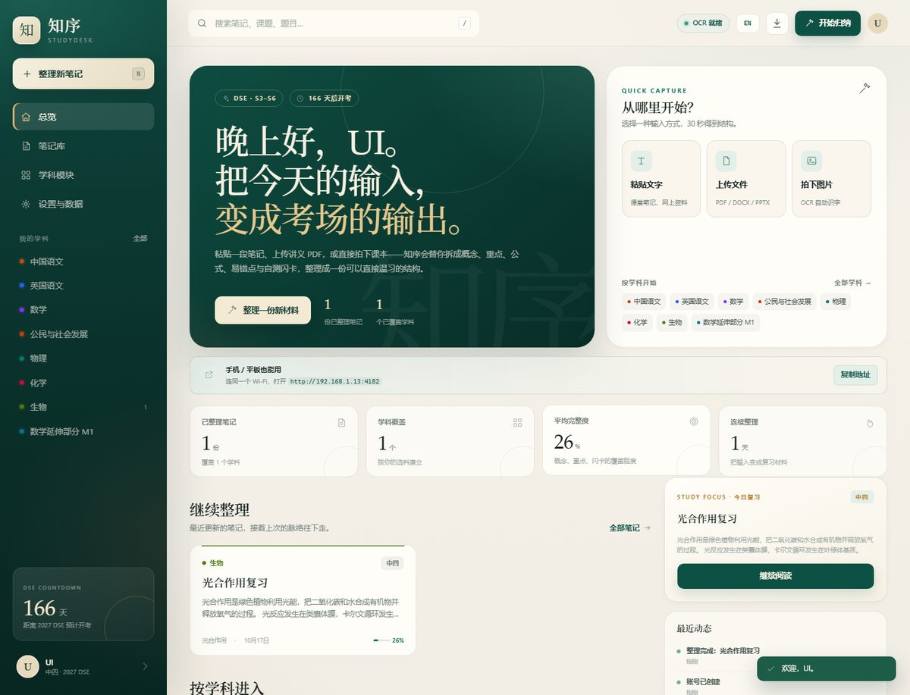

把材料收进来
图片 OCR、PDF / DOCX / PPTX / XLSX，或直接粘贴文字。保留原始材料，方便对照。
拍下课本、上传讲义 PDF，或粘贴一段课堂笔记。知序会把它拆成概念、重点、公式、易错点与自测闪卡，按你的选科整理好。
在线使用 · 账号登录 · 笔记按账号隔离

学校已经有足够的题目。知序只解决一件事：把散乱的材料变成能反复复习的结构。
图片 OCR、PDF / DOCX / PPTX / XLSX，或直接粘贴文字。保留原始材料，方便对照。
知识脉络、学习目标、核心概念、重点、公式、易错点、例子、作答框架和翻面闪卡。
中三至中六、核心科与选修科（含 M1 / M2），每个账号的笔记与设置独立保存。
它帮你整理自己的笔记，并给出相关视频的搜索入口。
每个账号独立保存笔记、附件与选科；登录后进入自己的知识库。
核心科 + 选修科，含 M1 / M2；课题按 S3–S6 组织。
16 个学科、174 个课题，按 S3–S6 与单元组织。
按笔记标题、课题和学科生成 YouTube / Khan Academy / Bing 视频搜索链接。
浏览器打开即可，笔记按账号隔离，不需要安装客户端。
注册时先选年级与科目，之后可修改；每个账号的笔记互相隔离。
截图来自实际运行版本，不是概念稿。
账号、笔记、附件和选科保存在服务端数据库。登录后只能读取自己的笔记；支持导出与注销删除。
如果使用第三方 AI 接口处理材料，请先确认对应服务商的隐私条款。知序不会把你的笔记用于训练。
账号隔离
每个账号的笔记、附件与设置独立保存。
登录访问
未登录无法读取笔记；会话 Cookie 为 HttpOnly。
可导出
支持 JSON 备份与 Markdown 导出。
可删除
注销账号会删除自己的笔记与附件。
不需要先学一套复杂的笔记方法。
按你的选科进入；也可以直接上传图片或文件。
提取文字，拆成概念、重点、公式、易错点与闪卡。
在笔记库中按学科、年级、关键词找回；相关视频可跳转搜索。
电脑和手机都可以使用。上传图片、讲义或粘贴文字，知序会整理成自己的知识库；不需要安装客户端。
扫码，或复制微信号在微信里搜索添加。
Rzcr0112
在线时间不固定；留言后 24 小时内回复。